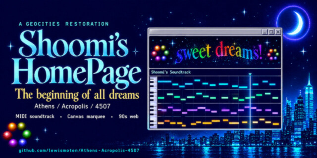

Shoomi's HomePage
GeoCities restoration

A restoration of my first web page from the 1990s, with a Canvas recreation of its Java applet marquee, Web Audio MIDI playback, and a browser version of a Visual Basic color editor.
Executive summary
Why it exists
I got a GeoCities page in the 1990s, my first web page, under the account name moonhalo and the persona Shoomi. I archived it on a CD resume in 1999. Today's browsers can't run its Java applet, its embedded MIDI, or its Visual Basic editor.
Outcome
The original experience works in a current browser, with the restoration notes kept in the README.
My role
Author and maintainer.
Technical overview
How it works
A partly modernized archive that still looks and sounds like the original. The Java applet marquee is recreated with HTML5 canvas, using the original message flow. A small Web Audio sampler player reads the original MIDI file directly. The title font loads as a webfont, which restores the look of the navigation and page titles. The old Visual Basic color writer is recreated as a browser app with a palette picker, per-letter colors, gradient HTML output, and a live preview.
Hard parts
Making the original experience viewable in a current browser without legacy plugins or local font installs.